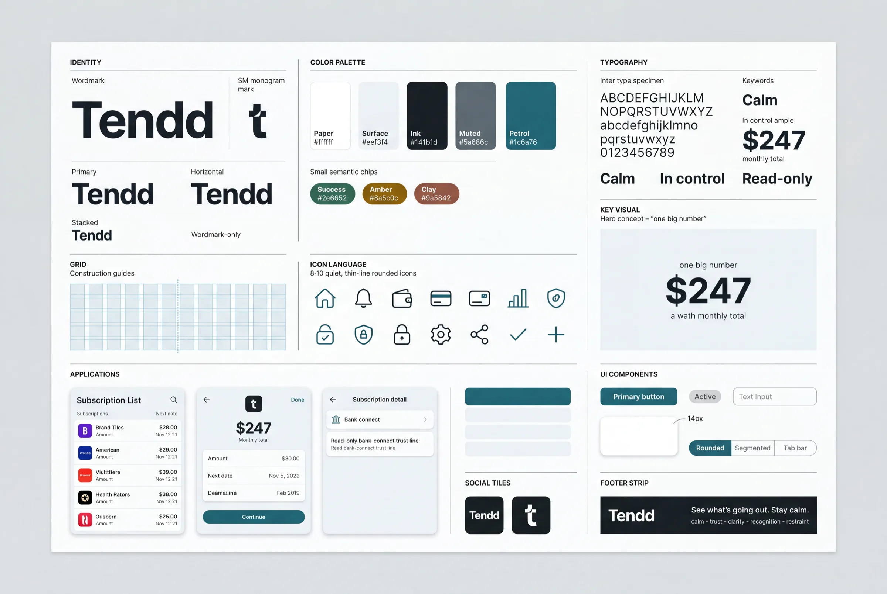

Stage 09 · Design System
This page is for the person who did not build it. Tomorrow-you, who already decided something once and cannot remember the argument. The developer at handoff, who needs to know what is allowed before writing a screen. A new session, which has to be told where to put things. It answers three questions and nothing else: why it looks like this, how to use it, and how to grow it.
Every claim below points at a file. The look was not chosen here: it was found at Concept from the personas and the founder's recorded taste, locked as Petrol and Paper on 2026-07-15, and this system is only its mechanics. That order matters when something needs to change. A colour is not a preference you can talk anyone out of on a Tuesday; it is the end of a line that starts in a research file, and the line is short enough to walk.
The visual language is five oppositions, not five adjectives. Each was drawn from a real line in the research and built from a specific borrowed technique, and each one still has a consequence you can point at in the code. A visual decision with no attribute behind it is an invention, which is the rule design/concept/docs/concept.md has held since stage 06. The middle column is what the attribute became once it was code; the right column is where you can go and look at it.
| Attribute | What it means in the system | Where it is visible |
|---|---|---|
| A1 Calm, not alarming Emma closes anything red or worded as a warning |
There is no alarm red in the palette at all, and no role that could become one. The two tones allowed to raise a voice are desaturated and split by whose fault it is: amber --text-attention for a price change, which is the merchant's, and clay --text-failure for a failure, which is ours. A status is a stone chip on --bg-status, an informational tag rather than an alert. |
Colour, the roles Chip, Wash block |
| A2 Trust shown, not claimed The activation gate is trust, not features |
Petrol has exactly four jobs and one of them is the read-only line. That makes the trust declaration a first-class block next to the figures rather than fine print under them, and rule U8 keeps it honest: one per screen, and only where a figure actually came from the bank. | Trust block Usage rule U8 |
| A3 One big number, not a dashboard "Too many numbers, too many graphs" |
--type-display: 2.875rem (46px at the default) is declared for the monthly total and for nothing else in the product; the next rung down is 32. Rule U9 allows one .total per screen, on the ground that two of them means neither is the biggest thing on it. Four screens carry one, none carries two. |
Big total Typography |
| A4 Recognition, not codes "SPOTIFYAB STOCKHOLM" is not a name |
The content layer is a real merchant mark and a real name, never a card-statement string and never stock art. The category rides along as a quiet pill instead of a legend to decode, because this person pattern-matches rather than analyses. | Logo, Subscription row Icons |
| A5 Warm restraint, not clinical The taste rejected beige and cold ledger grey by name |
One accent for the whole product, and one shadow, --shadow, barely there: depth is carried by the hairline and by the paper, not by lift. Restraint is written as a rule rather than left as a mood: U1 allows one filled action per zone, so the accent is spent deliberately or not at all. |
Colour, the primitives Geometry, Button |
A5 says warm, and the ground is --canvas: #eef3f4, which leans slightly cool. That reads as a contradiction until you see where the warmth actually lives. The neutral was pushed a whisper toward the accent rather than toward beige, so that white cards read as paper on a desk instead of panels in an application; the warmth is carried by the voice, by the plain-language rows and by how rarely the accent is spent, not by the hue. Beige was refused by name in the taste, and a warm hue here would have walked straight into it. This is written down because it is exactly the kind of thing that gets quietly "fixed" a year later by someone who read the word warm and reached for the paint.
Recorded from the founder on 2026-07-15 and kept next to the personas, so that a new prompt cannot reset it to the model default. Liked, one trait each: Monzo for plain-language character with one confident accent, Apple Card for radical clarity, Copilot Money for the calm of a well categorised view, Monarch for spending the accent only on the single most important action. Actively avoided: the reflex calm-fintech palette of mint, sage and beige, which is the first thing a model reaches for on the word calm; beige on its own, called out separately; red as an accent or an alert; rounded-everything with friendly blobs, which reads as a toy rather than as money software; and generated-looking cliche, the purple gradients and the glassmorphism. The four liked products do not all pull the same way, and the tension was resolved rather than averaged: Apple's clarity warmed toward Monzo and Monarch, Copilot's category colour taken onto a light canvas rather than its dark one.
A reference is an input, not an output: one base, two single techniques lifted from two other products, and no wholesale clone anywhere. The refusals below are as load-bearing as the takings, and they are the reason this palette is not the one you would guess from the words "calm fintech". The full sourcing, with the persona line each technique relieves, is in design/concept/docs/references.md.
| Source | Role | What was taken | Where it lives now |
|---|---|---|---|
| Monzo | the base | The flat calm surface system, the quiet status badge, and plain-language active-voice rows: "we blocked the payment", not "the payment was blocked" | --paper on --canvas with one shadow, --bg-status and --text-status, and principle 2 of voice/docs/voice.md |
| Apple Card and Wallet | one technique | The transaction clarity layer: a real mark, a real readable name, a category, the amount, the next date, and one number given the size hierarchy | Subscription row, Logo, Big total |
| Copilot Money | one technique | The category as a soft coloured pill, a recognition signal rather than a chart, toned down from a neon inset glow to a calm light chip | Chip, tone quiet |
no red Monzo's Hot Coral and every relative of it. The mechanism of one reserved accent was taken; the hue was not. Red is an alarm signal for this person, and the system has no role that could carry itno dark ground Copilot's midnight canvas as the product's ground. Calm-light is the trust environment; a dark finance UI reads as a serious tool for finance people, which is the position we are not takingno reflex palette Mint, sage, beige-and-terracotta. Guessable from the category, so it is a reflex rather than a decision, and it was discarded before the three directions were even drawnno stock art Tendd is data-first. The content layer is real brand marks, and the empty states carry a sentence rather than an illustrationThe dark theme is not the refusal being broken, and it is worth saying out loud before someone finds it. Every role in this system is written twice, once in :root and once in [data-theme="dark"], so a dark theme demonstrably exists. What was refused is dark as the product's ground, the thing the anxious person meets on first open. A theme that a person chooses is a different object from a canvas chosen for them, and the pairing is what proves the palette is built out of roles rather than out of colours. See the stress test, which is the page that makes that argument in pixels.
One dense toolkit plate was generated for Petrol and Paper as a record of the locked language, and this is the first page in the project that actually shows it. It is a record and not a source: the brand was found through three live HTML directions and locked from them, and the plate was rendered afterwards. Where the plate and the code disagree, the code wins, and here is exactly where they disagree today.

voice/docs/microcopy.md and the values are in design/system/tokens.css.| On the plate | In the code today | Why the code is right |
|---|---|---|
| A lowercase t monogram in a rounded square | Crop A: one letterform larger than any frame, with a window cut out of it | The mark was locked by decision D-Brand on 2026-08-12, four weeks after the plate was rendered. See Brand mark and where the mark was found |
| The wordmark set entirely in ink | Inter 800 at -0.02em, the dd pair tightened, and the last letter petrol, with no condition | Same decision, same day, and the plate predates it. See Brand wordmark |
| A fourth semantic chip, success | No success role exists. The palette carries amber, clay and stone, and nothing green | It was the only orphan in the file at stage 08, declared and read by nothing, and it was dropped rather than carried. It re-enters the day the cancel-win screen is coloured, and not before |
| "8 to 10 quiet thin-line icons" | Four destination masks, fourteen merchant marks, two drawn marks | The set was built against the real screens rather than against a number. See Icons |
Not one number in this system was chosen at the moment it was written into a stylesheet. Every value arrived by migration: it was decided once, and then it moved from file to file carrying its origin in a comment beside it. That is why the token file reads as it does, and why a comment there is not decoration: it is the last link back to where the value was picked, and it cannot be recovered from anywhere else once it is gone.
| Stage | File | What happened to the values |
|---|---|---|
| 06 Concept | design/_theme.css | Three contrasting directions were built as live HTML, the founder locked Petrol and Paper from the render, and the locked direction became a stylesheet. The values were picked off the direction that shipped, not off a plate |
| 07 UI + Visual | design/kit/kit.css | The theme became the kit of the coloured sample by git mv, so the file kept its history. Six values that had been documented from the draft rather than from the shipped stylesheet were corrected against the code at the close of the stage |
| 08 Tokens | design/system/tokens.css | The flat kit split into two levels and no third: a primitive keeps the raw value and its origin comment, a semantic role names the job and is written twice, once per theme. The kit file was then deleted, and the coloured sample moved onto the system with zero unexplained pixels |
| 09 today | design/system/patterns/ | No colour, no type size and no radius changed. One measure moved file, two composition gaps were named for the first time, and one of those two was a real change: an action foot that had been 16px at a phone and 32px at a desktop is now 16 everywhere, on four pages, by decision rather than by accident of layout mode |
The plate is not a link in that chain, and the order is the point. A generated plate first and a product bent to fit it afterwards is the common way round; here the language was found live, locked, and only then recorded as a picture. It means the picture can go stale without anything downstream breaking, which is exactly what has happened to its monogram. Where a value actually lives today, with its measured contrast in both themes, is the colour page.
Four questions, four doors, and the fourth one is named separately on purpose. A person building a screen for the first time goes looking for permission, finds it, builds, and meets the prohibitions afterwards, when the screen already exists and changing it is expensive. So the prohibitions get their own door, at the same size as the other three.
The hub, and a page for every component: anatomy, its variants, every state, the rule and the anti-rule, and the css it is actually drawn by. Grouped by the ladder, atoms through organisms.
Three settled compositions that stand on three screens or more, plus four candidates that are waiting for a third screen. Take the pattern whole; do not re-declare the gaps it owns.
The token ladder and the component ladder, which are not the same ladder, plus naming, the parity and structural checks, and the five things a new component is.
Eleven usage rules, each with the source it was counted from and how to check a new screen against it. Not anti-rules: these are about how many, next to what, and where a thing may appear at all.
| If | Then |
|---|---|
| A pattern covers the composition | Take the pattern. It owns the gaps between its members, so re-declaring them on the screen is a second author for one value and the two will part company |
| No pattern, but the components exist | Assemble from components in markup, and let each one keep its own spacing. A composition that turns up twice is still just markup; the third screen is what promotes it into patterns/ |
| The component does not exist | It is an order for the system, not an exception on the screen. Build it as five things, in that order, and only then use it. A style written on a screen because the system did not have it is the desync that every later stage pays for |
New goes into the system first and onto the screen second. That is the whole rule, and everything else is its consequence. A component means five things and four is not enough: the css in design/system/components/, a page here in design/kit/, a row in the registry in its own level group, a line in docs/inventory.md with its level, and an @import in index.css in its level group rather than at the end. A composition goes to design/system/patterns/, and only after a third screen has asked for it. A value goes to its level in tokens.css, by a named decision that says variable, value and why, with its origin beside it.
And a correction goes to the same places, never to the screen it was noticed on. A fix applied on one screen is a desync by definition, because the other screens carrying the same component did not get it. A contextual override is the same defect wearing a nicer name: .host .btn { font-size: 15px } is an undeclared variant, and the honest version is to declare the modifier in the component's own file and put the class in the markup. The rules in full, with the checks that catch a violation, are in Architecture; the six that travel with the code, because design/system/ can be lifted into another project whole, are in its own CLAUDE.md.
A system stays honest by writing down what it decided not to do. design/kit/docs/backlog.md is that file, and this section is its visible place: it was opened during the component rounds of stage 08, earlier than the schedule asked for, because findings were arriving faster than the steps that owned them and a finding with no home is a finding that gets lost.
60 rows, 23 closed and 37 open, and two dropped at verification. Fifty-four came out of stage 08 and sort into blockers, decisions that need a person, holes with the reason each was not filled, rows from the component rounds and from the control census, copy owned by Voice, and a last section naming what is deliberately not in the file so the next audit does not raise it again. The four below came from somewhere else, and that is why they are shown here: not from an audit of what already stands, but from the first product screen built out of the system after it was called finished.
Alerts and its three states were assembled from design/system/ alone: 44 distinct system classes across four pages, and 0 new CSS files, 0 new tokens, 0 new variants, 0 new lines of copy. Nothing was added to the system to make the screen fit, which is the rule the test runs under. What was missing is written down instead, and the rule against drawing it on the screen by hand is what makes the list mean anything.
| What is missing | What it was needed for | Which level closes it | Priority |
|---|---|---|---|
| An edge for the logo tile in the dark theme | Measured against the dark surface: Peloton 1.04:1, Netflix 1.25:1, Disney+ 2.05:1, three of the fourteen merchant marks under the 3:1 a non-text boundary owes. On the light paper the same three read 17.44, 21.0 and 12.4, which is why no earlier pass saw it: the dark theme was audited by role, and a merchant mark is an image | Component, logo. The role it needs already exists in both themes, --line-container. Whether the edge is always on or only under a dark tile is a decision |
Medium |
| A sentence in the right-aligned pair list is cramped at 360 | Alerts, all clear: three of its four rows wrap onto two lines on both sides at 360, so "with the old price beside the new one" ends with "one" alone. All four are single-line at 1280 | None, and that is the finding. Pair list already declares .sentences for exactly this and the grey chose the plain form deliberately, five other grey pages using the modifier. A colour copy may differ from its grey by styling only |
Low, and it is the founder's at the rollout |
| U8 says when a trust line is ALLOWED and never when it is OWED | Alerts carries eight items each ending "from Chase" and no trust line; its error state, where nothing was reached, carries one. Both are legal under the rule as written, because the rule is a maximum | Usage rule, U8. Either it gains an obligation half, or it states out loud that it is a ceiling and the obligation belongs to the wireframes | Medium |
| The interruption pattern's host axis was short by one Closed | Alerts, could not reach holds the announcement inside a list column, where the three known hosts held it directly. The gap measured 24px with the class and 24px without it at both viewports | Pattern documentation and no CSS. A child selector does not care what the parent is called; an axis read off the corpus that stands is a description of it, not a limit on it. Corrected in four places the same day | Closed |
Two instruments again, Codex read-only over the source and a browser pass over the running pages, taken independently and merged with a "who found it" column. Twelve findings held and two were dropped at verification. Eleven of the twelve were one defect with eleven addresses, and that one is the row worth carrying into stage 13. The full merge, class by class, is on the proof page.
| What is missing | What it was needed for | Which level closes it | Priority |
|---|---|---|---|
| A per-component coloured footprint is written by hand in forty places and nothing recomputes it | The coloured corpus grew for the first time since stage 07, 28 pages to 32 and 7 screens to 8, when step 5 built Alerts. 21 components' counts went stale in one commit and every one had to be found by grep and re-counted by script. The same growth arrives again at stage 12, four times the size | Tooling, and it is the only row in the backlog that asks for a script rather than a decision. The counter exists and was run twice at this stage; it lives nowhere. Either it becomes a checked-in script that regenerates the line, or the line stops carrying a number and carries a link to the one place that does | High, and it belongs to stage 13, where the handoff decides what a developer is handed |
| Ten component pages said another component "is not built yet" long after all 57 were built Closed | Fifteen occurrences across ten pages and two CSS files, every one of them true when it was written during the build rounds of stage 08. A reader following one concludes a part of the system is missing | Documentation, fixed in the same step: each now links the page that exists. Kept in the file as the record, because the mechanism is the row above. A sentence about the state of the system, written inside a component, has no owner who re-reads it | Closed |
What the test did not find is worth a line of its own, because a silent absence reads as a formality. No component was missing, no state, no token. No line of copy had to be invented: every string on the four pages is character-identical to its grey original, which Voice owns. The one build error was mine rather than the system's, and the browser caught it: the links in the action row were written bare, where the system had folded that anchor into the button atom at stage 08.
The earlier finding of this stage never reached the file at all, because it closed on the day it was found. The colour page showed 31 semantic roles where tokens.css declares 34; the three missing ones appeared nowhere on the stand, not as a card, a row or a mention. Nothing was broken in the product, all 34 being paired and past their thresholds. What was broken was the parity between the code and the documents, and the recount of 2026-08-12 missed it because it was taken off the stand rather than off the source. A count of a file is taken from the file.
{kind=link}